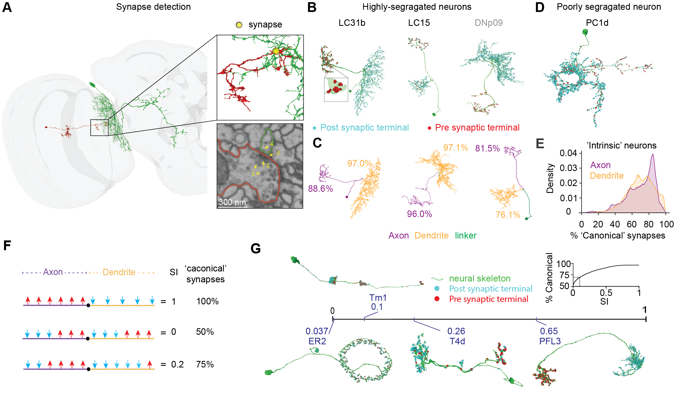
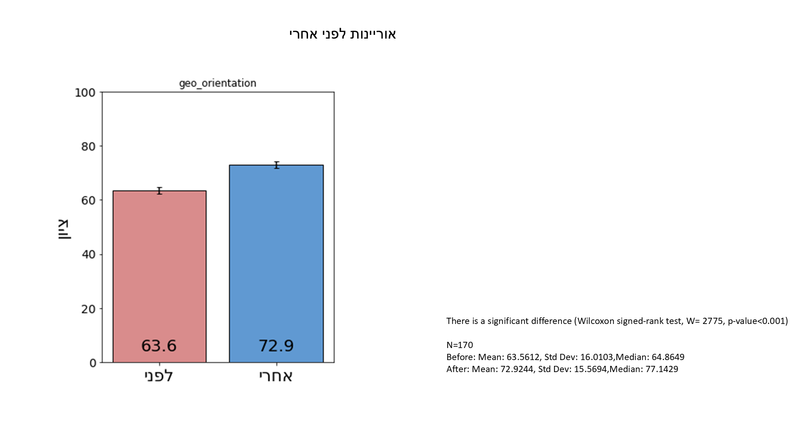

Connectome Analysis Pipeline
Weizmann Institute of Science · PhD Research
Graph-based analysis of Drosophila connectome data — extraction, processing, feature generation, and visualization of neuronal and synaptic structures.
This section presents my computational and analytical work across scientific research, data science, statistical analysis, machine learning, graph analysis, and pipeline development. Much of my work has involved transforming complex data into interpretable structures, building workflows for repeated analysis, and producing visual or statistical outputs that support interpretation and decision making.

Weizmann Institute of Science · PhD Research
Graph-based analysis of Drosophila connectome data — extraction, processing, feature generation, and visualization of neuronal and synaptic structures.

Technion · Applied Research
Pre/post program statistical analysis integrating behavioral outcomes with geographic mapping via OpenStreetMap and Overpass Turbo.

Technion · Deep Learning Project
Deep learning model predicting geographic position from WiFi signal fingerprints, supervised by GPS data.

Weizmann Institute of Science · Research Tool
NetworkX analysis of biological structures — tree representations, adjacency matrices, clustering, and neuron skeleton analysis.